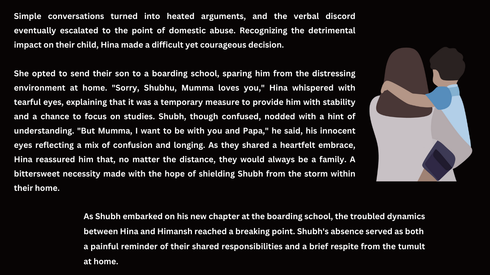
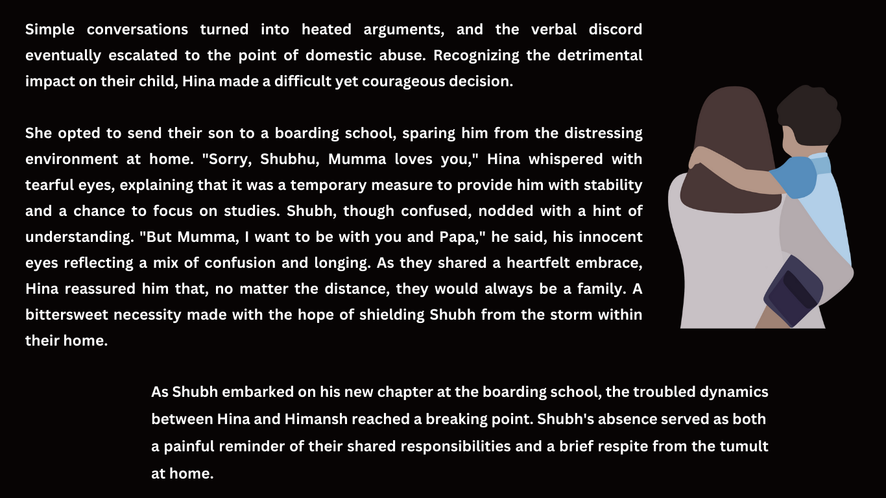
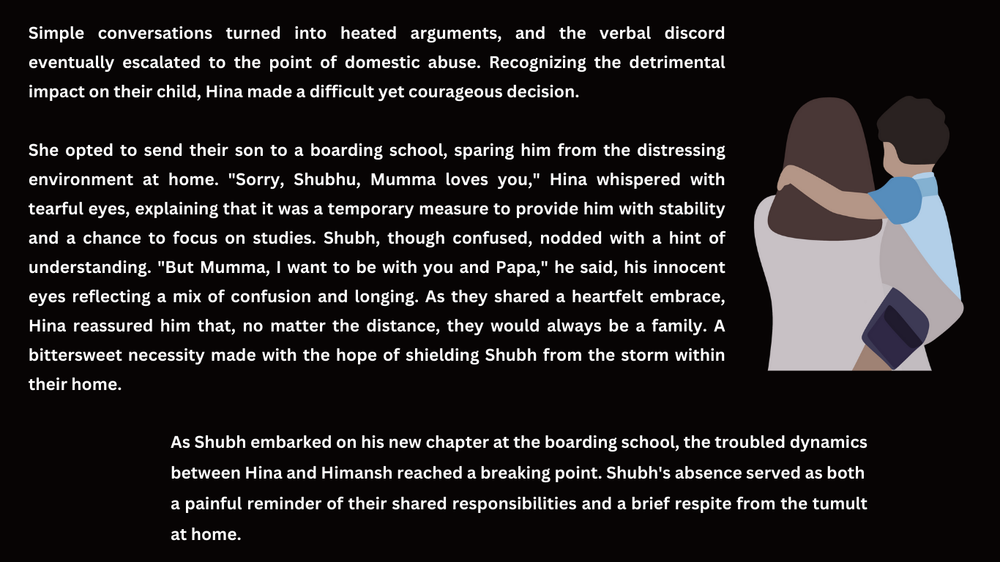
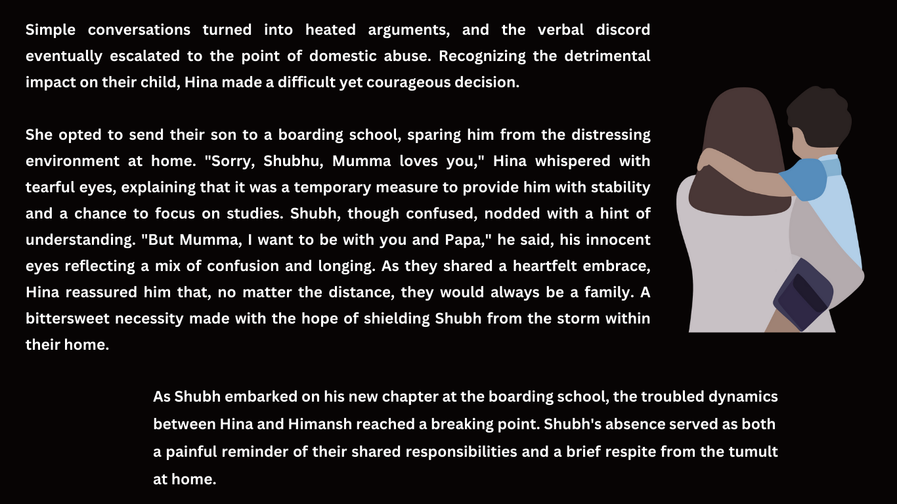

 

The UAE has undergone significant societal and economic transformations over the years. The discovery of oil in the mid-20th century brought unprecedented wealth and development to the region, leading to a rapid modernization process. The UAE, comprising seven emirates, evolved from a predominantly nomadic society to a global hub of commerce and culture. Socialization in gender roles was clear and divided, with women taking their roles inside the household and men holding the power both inside and outside the household. Before the oil era, the realm of the private versus public was clearly divided. Nowadays, women increasingly participate in the workplace and share the public sphere with men.[1]
As the economic landscape shifted, so did societal norms. The concept of informal social networks transcends nationality, class, and language, serving as invaluable care networks that provide not only emotional support but also practical assistance, including social and financial aid.
Informal social networks exist across registers of nationality, class and language where they act as care networks and conduits of information, social and financial assistance (Kathiravelu 2012: 110). Even for undocumented migrants or visa over stayers, they help them moving up in the social mobility, providing care through advice and counselling.[young south asian page 8]
These informal networks operate as conduits of information, advice, and counseling, proving especially crucial for undocumented migrants or visa overstayers. In the protagonist’s situation, the support she received went beyond the formalities of legal documentation. The network offered her guidance on navigating the complexities of life in the UAE as a single woman, helping her overcome obstacles and providing the stability necessary for her to build a life in a new country.
This is more so the case with young women migrating from South Asian countries to the Gulf nations. With this rise in demand for migrant women in receiving countries– the overall effect has been that of an increase in the opportunities available to such young migrant women. This, in turn, is empowering them and freeing them from the erstwhile shackles of gender, generation, and other power relations.
The shifting societal dynamics in the UAE, especially for women, align with the broader trend observed in South Asian migrant communities. The rise in demand for migrant women has not only created opportunities but has also challenged traditional power relations, liberating women from societal constraints. This shares thematic parallels with the character Zouina from the film "Inch'Allah Dimanche." Both narratives unfold against the backdrop of migration, cultural adaptation, and the quest for personal freedom in a new environment. The migration of both Zouina and Hina is initially motivated by love and the desire for family togetherness. Their journeys begin with the hope of strengthening familial bonds and creating a harmonious life with their husbands. Zouina in "Inch'Allah Dimanche" discovers a supportive community within her Algerian diaspora in France. These connections become her anchor as she grapples with an abusive marriage. The communal ties and shared experiences provide emotional support and practical assistance, allowing her to adapt to the unfamiliar French environment.